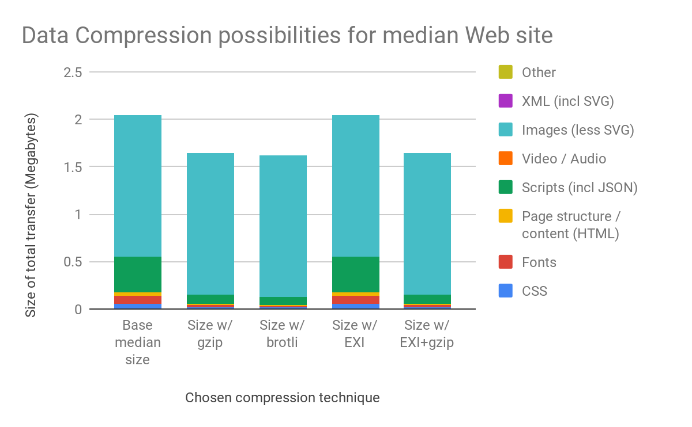

would need to be converted to instead read as:
/*[localname()="Envelope" and namespaceuri()="http://schemas.xmlsoap.org/soap/envelope/"][1]/*[localname()="Body" and namespaceuri()="http://schemas.xmlsoap.org/soap/envelope/"][1]
otherwise the system may still be insecure.[8]
This is to ensure that the “XML Namespace” (soape in this example) is not modified by an attacker to cause the XML Path expression to change result, and to ensure that additional XML tags can’t be supplied by an attacker to fool a SAML implementation into trusting the wrong part of the XML document. Hope you caught all that!
Other (non-XML) data formats do not support Namespaces, which eliminates this potential security risk. To further improve security, modern equivalents to SAML also don’t use Path expressions. This simplifies the security standard significantly, which makes it safer to implement by reducing “attack surface”.
You might be forgiven for thinking that this is just IT developer jargon and “not a big problem for the professionals”. And while it’s true that IT developers would know what’s going on here if told, it is decidedly not true that developers would get this right on their own based on training and experience, especially as the XML Path expressions get more complicated. And this is just one corner of XML! It is for this reason that Okta, a leading identity and access management cloud service provider, recommends “If you’re a developer building systems to integrate with SAML vendors or single sign-on providers, try to NOT integrate using SAML if possible. Instead: use a more modern identity standard such as OpenID Connect.”[9] (emphasis added).
It is also important to emphasize that the security problems noted here with SAML are directly linked to its usage of XML and XML-based standards such as XPath, XML Signatures, and XML Encryption. SAML issues are not peculiar to poor choices made by the SAML designers that could have been avoided by smarter designers. SAML’s issues root from its choice to build atop the wider XML ecosystem.
SAML Part II: XML Strikes Again
In case you’re wondering if this was a one-off issue that once resolved, would make SAML safe, the answer is “No!”. In 2018, four years after Krawczyk published his detailed guidance on how to securely implement SAML, Duo Labs discovered a new technique to attack SAML based on core XML functionality, disclosing that 6 popular SAML implementations (including Duo’s own implementation!) were vulnerable.[10] 3 of these 6 had also been impacted by the XML digital signature issues described in the previous SAML attacks. This happened despite having plenty of time to pre-emptively audit and implement appropriate mitigations as recommended in Krawczyk’s guidance.
All of this is particularly alarming for SAML in particular, since SAML is typically used as a solution to sign in to multiple systems. This makes the impact of SAML flaws particularly severe, since if you can convince a SAML implementation that you have logged in (as both studies succeeded in doing) then you will be issued tokens that you can use to access sensitive data from multiple separate systems. Why spend a lot of money doing the IT equivalent of building capabilities to forge passports with all their anti-counterfeiting techniques, when you can convince the State Dept. to just issue you a valid passport with whatever information you wish?
Even the “Pros” Can’t Safely Use XML
Even if you don’t use SAML, just using XML is enough to put your systems at risk unless you can consistently show more implementation discipline than the likes of Microsoft, Google, Facebook, Oracle and IBM. A Navy tester recently found a vulnerability in a Navy personnel system (named CVE-2018-3192) based on misuse of a well-vetted “XML stylesheet transformation” library by the software vendor.[11] Even newly developed software from competent organizations that have used XML for years are frequently impacted by XML-specific vulnerabilities, including IBM’s Mobility as a Service 360 Platform, vulnerable to an “XML eXternal Entity (XEE)” flaw.[12] The immediate key takeaway for the security researcher who found the flaw in IBM’s platform was “XML is a dangerous data format that’s easy to handle incorrectly. If you see it, get excited.”[13] (emphasis added).
XML security is so fraught with danger that XML usage was added as an OWASP Top 10 Web Application Security risk in 2017, even though XML usage for Web applications was already lower than alternatives in 2017.[14] The OWASP organization recommends “Whenever possible, use less complex data formats such as JSON”. The complexity is the key here—these XML security standards and XML libraries were designed, built and tested by smart and competent developers, but the problem (making XML secure) is simply intractable. The Navy has smart and competent IT staff as well, but we are not more competent than the commercial space here, so we should expect to continue to suffer the same issues if we standardize on XML.
Commercial Cloud Support
Now let’s assume that the cybersecurity issues inherent to XML and the XML ecosystem are resolvable. Even if that were the case, we still couldn’t standardize on XML, because the commercial cloud services that we are attempting to migrate to for “Big Data” are all incompatible with the sole use of XML as a data format. This impacts services handling functions such as advanced analytics, machine learning, artificial intelligence, data storage and transfer, using “Internet of Things” (IoT) devices and scalable data transaction processing.
Instead, various other formats are used for purposes spanning data interchange (using JSON, CSV, Thrift or Avro) up to optimized data analytics (using JSON, CSV, Parquet or ORC). And in the “pay to the penny for what you use” cloud model, making the right choice here has significant cost and performance implications. It’s not that the cloud can’t store XML data—the issue is that the cloud won’t do anything with it. They’ll hold onto it and give it back to you if you ask for it, but they won’t index it to speed up data queries, they won’t query it, they won’t feed it into their data analytic services, they won’t train machine learning models using it, and the list keeps going.
Here’s a table of some of the cloud services that only support data formats popular in industry (not XML):
| Cloud Service | What It Does | Other formats | JSON support | XML support |
|---|---|---|---|---|
| AWS Simple Storage Service (S3) | Stores data and files, builds data lakes. Can filter data in some formats without a separate database to reduce cost and increase performance. | |||
| AWS Elastic Search | Indexes, transforms, queries and visualizes “unstructured” data like Web server log files, personnel survey text, social media feeds. Uses JSON natively, other formats require custom code. | |||
| AWS Glue | Builds data transformation pipelines that load, transform, convert data formats. Widest support of any AWS data service. XML cannot be used as output in custom PySpark jobs, some XML tags cannot be used in data catalog and catalog requires custom classifier. JSON can work in data catalogs without custom classifier but is usually improved with custom classifier. | |||
| AWS Athena, AWS Redshift Spectrum | Perform “serverless” database-style search of data contained in AWS S3 (see above) without building a full database first. Used to build “business intelligence” dashboards and enterprise metrics. | |||
| AWS QuickSight | Shows graphs and charts of data held in AWS S3, or dashboards built in AWS Athena or AWS Redshift (see above). JSON support includes JSON inside of CSV. | |||
| AWS DynamoDB | Amazon’s premiere serverless, scalable “NoSQL” database, storing “document-structured” data and semi-structured data. Although XML is document-structured, DynamoDB supports JSON, not XML. DoD can use this service in AWS GovCloud. | |||
| AWS Kinesis Analytics | Perform analytics on streaming data in real time (e.g. a real-time feed of personnel PCS check-ins). Requires streaming data to be in JSON or CSV format. | |||
| AWS Internet of Things (IoT) | AWS service supporting mobile and Internet-enabled microdevices. Can intelligently query and react to JSON data, other formats are passed on. | |||
| AWS Machine Learning (ML) | Service to build “machine learning” models (same way we used to train spam filters before GMail). Works with AWS IoT (see above) to train models using JSON data. | |||
| Amazon SageMaker | AWS service to build “artificial intelligences” (AIs) for problems like predictive analysis. Uses JSON to build and train AIs, other formats require custom code. | |||
| Amazon Simple Notification Service (SNS) | Used for email notifications and mobile push notifications. JSON notifications support message filtering so recipients can limit to topics of interest. | |||
| Azure CosmosDB | Microsoft Azure’s premiere serverless, scalable “NoSQL” database, serving a wide range of data modeling needs including document-structured, semi-structured and graph databases. Supported in Azure Gov and DoD clouds. | |||
| Azure Data Factory | Analogous to AWS Glue, this service allows for importing data and files, converting them to different formats, and storing them elsewhere in Azure. | |||
| Azure Search | Allows you to build search indexes into data stored in other Azure services like Azure Blob Storage (similar to AWS S3). Supports indexing JSON, CSV, PDF, Microsoft Office, and text content within XML files. | |||
| Google BiqQuery | Allows you to build data warehouses in a serverless fashion for rapid queries. Used for this paper (see Appendix A). Uses JSON or CSV, or cloud-native formats. Has format requirements for JSON. |
Table 1: Support for data formats amongst various cloud service providers
This is not to say that commercial cloud providers don’t support XML at all. They sometimes provide support for subsets of XML (such as with AWS Glue and Azure Search), and every cloud provider offers standard database offerings that descend from databases with support for storing and processing XML data, such as AWS Relational Database Service and Azure SQL Database.
However, these standard databases also support JSON, and none are designed to store only XML (or JSON) data, as these violate the relational data model standard databases are most suited for. As Microsoft notes for its own relational database, “If you have pure JSON workloads where you want to use a query language that’s customized for the processing of JSON documents, consider Microsoft Azure Cosmos DB.”[15] Note that Cosmos DB does not support XML, it only supports JSON.
Why do cloud providers hew so closely to JSON when XML is available? Well, because that’s where the developer mindshare has gone, as shown in Figure 2 on the following page, showing trends of developer questions on the popular Stack Overflow question and answer site for JSON, CSV, XML, and XML-based webpages:

Figure 2: Relative proportion of StackOverflow (a popular developer reference site) questions tagged by topic over time[16]
The conclusion here is stark: If we intend to use the commercial cloud, and standardize on only a single data format, that format cannot be XML. XML is not supported by the breadth of cloud services we are modernizing to pursue. We should not standardize on any single data format as there are significant cost and performance implications to the choice of data format across different uses cases, potentially permitting cost reductions in excess of 99%![17] OpenBridge has an example where converting data to Parquet format saved 99.7% of cloud usage and storage costs. But if we did want to pick a single format despite that, the right format would not be XML, but JSON based on its wide support amongst the cloud services appropriate to the Navy’s needs and aligned with the DoD Cloud Strategy.
IT Talent Management
Even if XML were as secure as simpler data formats, and even if cloud providers offered solid support for XML data, there would still be a large issue, as hokey as it sounds: No one wants to use XML. InfoWorld put it bluntly two years ago, “Choosing XML over JSON when building a new web service is a red flag likely to turn away talent, because it indicates a lack of interest in staying relevant.” (emphasis mine).[18]
This is somewhat unfair as solid technologies have often fallen prey to being on the wrong side of the hype cycle despite offering an equivalent or even superior technological approach. But the DoD has already famously been on the wrong end of this one before, when the DoD tried and failed to standardize its software development on the Ada programming language, which was outcompeted in programmer’s minds by languages like C and C++ despite offering real benefits in safely writing software.
Ada was at least arguably better than C and C++. XML is worse than JSON, Parquet, Avro and others, and the private sector has built up around these latter formats substantially faster than the defense-related talent pool for software developers has for XML. There is absolutely no reason to believe that Navy will the XML ecosystem to its prior height at this point, but there is every reason to believe Navy will push developers away if we try. It would be ironic indeed for the Navy to finally take a step towards resolving long-running IT talent recruiting and retention issues by launching a vision of a modern age of computing in the Navy, only to then take three steps backwards by forcing an unpopular data format on its IT talent.
I should be clear here that XML lost out fair and square in developer mindshare in the commercial space. It’s not an ugly duckling that was never given a fair shake, on the contrary it was popular for years (because it was the only game in town) until it was mostly supplanted by data formats whose strengths were fit for the mission while addressing the downsides XML users couldn’t avoid. The industry moved away for a reason, and trying to force our IT talent back to XML will force them to choose between staying relevant or staying Navy. We should also bear in mind that this would be a Navy-specific problem: the U.S. Air Force has a project (Kessel Run) that is rapidly growing in developer mindshare because they actively advertise—and execute on—the ability to do modern software development.
XML Doesn’t Solve Data Standards
This would all be a bit depressing if XML were really the only solution to our data standards needs and we couldn’t adopt it. But there’s good news: XML isn’t the only solution to our data standards needs. In fact, XML adoption doesn’t solve data standardization at all. We do need to solve data standardization, just as the commercial space has needed to solve data standards, but when we do solve it, the lessons will apply even with other data formats.
To give an example, it would be possible to write XML documents that put the bare requirement of XML tags around non-XML data (like JSON). These would be “fully valid” XML documents that “fully conform to the schema”, but by the logic of the C2C24 announcement they’d be useless for data standardization because the meat of the data wouldn’t be XML at all. The point here is that it’s not enough simply to put your data into XML format, there’s real work that must go on even before you write a single byte of data, XML or otherwise.
So what do we really need to do for data standardization? It comes down to mostly a few things:
- Naming standards: If I call a data element “NAME”, that still leaves a lot of questions. Is that a person’s name? Something else like a space or void in a ship? Is that from a field I control or am I tracking this data element to feed into a later process I don’t control? In the XML model you’d solve this with heavy use of XML “namespaces”, but in today’s ecosystem you’d typically ensure that reasonably detailed names are used within a single “application programming interface” (API). Since a single API has only a single owner, it is possible to avoid conflicts and to document the details that don’t fit into a data element’s name. That is, instead of controlling a huge data bundle to make sure you can always pour in more data without conflicts, and then moving that huge vat of data around, you control the interface between sender and receiver such that the interface properly documents the subset of data moving around, and both sender and receiver can check that the interface is obeyed. XML can be used for data flowing across an interface! But so can other formats, and in 2019 most APIs use JSON, or at least support JSON—APIs can support multiple data formats and many APIs do just that.
- Format of data element: This goes into the types of data that are contained in a data element. Back to the “NAME” example: Are non-Latin letters like 宮本 茂 permitted? For English names, is it last name then comma then first, or first then space then last? How are missing middle initials handled? However this is answered, it’s possible to document that answer for whatever data format we’re using, and documenting this for each data element is the bulk of the work of data standardization. XML offers no help here as this is a question for the business process.
- Structure of the data: Finally, the way in which data elements are arranged is important. For instance if a Sailor has 8 different NECs, are they laid out in fields like “NEC_01”, “NEC_02”, and so on? Or are they laid out in a single field “NECs” as a list of NECs? Are these NECs just thrown in the Sailor’s digital record with all the other data elements, or are they grouped together with other training-related elements in a way that could be copied wholesale into other records? Again, this is not a question that XML uniquely solves.
Resolving these 3 questions across the multitude of database tables, structured (and semi-structured) documents and so on that comprise Navy and DoD workloads is the real line of effort to address. Once addressed it will be possible to port those results into appropriate data formats, so long as the authoritative schema is in terms of the simplest data format to be used (since it’s easier to port definitions from a simple data format to a more complicated one, but can be quite difficult to go in the reverse direction).
Federal Guidance and Other Stakeholders
The Federal Government has an effort going focused on data standardization, the National Information Exchange Model (NIEM). While NIEM started off supporting XML data, NIEM today supports JSON as well.[19] Though even if they didn’t, the hard work would still be developing the data standard itself, not in describing the resultant data model using XML or JSON, Parquet, etc. So even in that view of the world, one could develop a NIEM-compatible JSON data model, easily construct an equivalent XML model if needed, and then use JSON from there to operate with scalable commercial cloud platforms using modern best practice.
Outside of NIEM, other Federal partners (such as the Department of Veterans Affairs and General Services Administration) have heavily adopted JSON, at least for data interchange.[20] Also the Federal CIO requires every Federal agency to implement statutory ‘open data’ requirements by publishing a list of the agency’s data resources in JSON format (see https://project-open-data.cio.gov/v1.1/schema/). Even if the Navy wanted to go it alone, we’d still have to work with interagency, Joint and Allied partners that may require use of non-XML data formats.
DoD-Proprietary XML Compression
Finally, I will discuss the most unusual aspect of the C2C24 data standardization push: the mandatory adoption not only of XML, but of an XML-specific compression format, Efficient eXtensible Interchange (EXI), that has picked up no support with the commercial cloud providers we are migrating to despite being fully standardized since 2011.[21] In fact, EXI was standardized in a four-year process based on an existing product, AgileDelta’s “Efficient XML”.[22] So it has been 12 years that EXI has had a chance to strike a chord with cloud providers and the wider private sector, and in that time the industry moved elsewhere, as can be seen in Figure 3 below:
Figure 3: Google search trends for XML, JSON, and EXI formats from 1 Jan 2004 to 21 Apr 2019[23]
For example, at the time I write this document, the Wikipedia entry for EXI is unable to note any significant commercial usage of EXI, and in fact references DoD specifically as a potential application of EXI, citing a student thesis from the Naval Postgraduate School (NPS). Frankly, DoD should not be a significant player in the selection and use of commercial standards, given the vibrancy and strength of the U.S. and international tech sector. If DoD adoption would be significant for a commercial standard, then something has gone gravely wrong.
So if not EXI, how has the commercial sector solved its issues with XML bloat? As shown on Figure 4, the answer has been to move away from XML. This chart shows the size of various types of Web content for the “median website” based on Google metrics.[24] Even when including XML-based “SVG” images as XML, the median website uses exactly 0 bytes of XML data today (see Appendix A the analysis).[25]
What this means is that data compression which works only on XML data is useless: Figure 4 below would also represent the data usage for the median web site including EXI compression. So while XML compression is notionally helpful, compression that works on many file types is much more useful, and the same will be true of our Web-based systems, even if we were to standardize on XML.
Figure 4: Amount of data used by median website for various types of data
Naturally pursuing improved general data compression is the direction that the commercial space has evolved, with companies like Google and Facebook developing improved compression schemes and working to get them implemented in popular Web servers and in popular Web browsers. Support in both is necessary, as both sides must support a given standard for the compression to be useful.
The best example of this is Google’s “brotli” compression format, which can reduce the size of the “CSS”, “Scripts” and “Fonts” components of Figure 4 above by anywhere from 10-30% more than the normal data compression method supported in all Web browsers, which is already about as much as EXI manages to find. Notably, Brotli is already supported on Navy browsers.[26] While the format is much newer than EXI, it has already achieved support in ~90% of Web browsers around the world.[27] Like EXI, Brotli has the benefit of being an international standard, specified by the Internet Engineering Task Force (IETF) as RFC 7932. Unlike EXI, Brotli works on all uncompressed data types, not only on XML. Even Brotli is not necessarily a giant improvement over existing data compression, but since it works on most data types and is already available it’s the best direction to proceed down where bandwidth is precious. See Figure 5 below to illustrate how data compression might impact the total size of a Web page:

Figure 5: Impact of data compression techniques on total Web site download sizes (gzip is the base compression scheme)
There are other compression formats out there to choose from, especially for domains where “general purpose” compression will not suffice, like multimedia or “Big Data” analytics.[28] The key point here is that the Navy must determine which types of data is using up its bandwidth before it can determine which data compression scheme to apply. Once data compression is decided upon, the Navy should start with data formats that are widely supported by the vendors we rely upon, and only move on to more bespoke formats if the performance requirement absolutely justifies it.
This concern is especially true of EXI, which is not supported by default in any operating system, Web server or Web browser which the Navy has in use, and which requires great care to configure in a way that beats general purpose compression tools. NPS research on EXI from 2015 showed that “... this experiment’s results indicate, in many cases these [EXI] defaults do not produce the smallest possible file size, and may not produce files smaller than conventional compression.”[29]
Unlike other data compression tools, we have no best practices to borrow from industry and a great deal more configuration options we’d have to get right to maximize the positive impact of EXI, and that only helps for XML data, which even Navy doesn’t have in large amount. We’d be on our own with EXI, maintaining it afloat, ashore, in our Web servers, in our networks, and in the commercial cloud.
Cybersecurity risks from data compression
Beyond the lack of industry support for EXI, EXI itself may not always be the most secure format to use for data transfer due to its built-in data compression. In the past few years several attacks have been developed against the security protocols used to provide data protection on the web, all of which rely on using data compression as a way to help guess the very secrets the security protocols were meant to guard.
These attacks require multiple conditions to be met, they don’t automatically subvert the entire security approach. But these conditions have become much easier for attackers over the years, culminating in the “HEIST” attack, which can be launched using only malicious scripting on a website.[30] What’s more, these types of scripts are commonly distributed to unwitting users on perfectly legitimate sites using advertising distribution networks (for example the HEIST researchers’ presentation on the attack used a live demo by advertising on the New York Times website). While such malware is quickly eradicated once identified, the damage is usually already done. The best safeguard against these attacks is to completely disable compression of sensitive data that is generated on-the-fly (pre-compressing files before sending to browsers is OK).[31]
What this means for the typical Navy systems that use a standard Web application architecture to deliver Web-based content is that they cannot rely on the use of any compression for sensitive data.[32] Not EXI, not the “modern” methods like Brotli discussed above, or even the historical methods like gzip.
EXI does have a mode that turns off its built-in compression, which would make it seem as if it would still be a reasonable “lighter XML”, the other objections aside. However disabling compression still leaves an important compression feature turned on (making the data susceptible to the HEIST attack). This extra compression (the “string table”) can also be turned off, but turning off the string table eliminates the majority of the improvement in data size that EXI would otherwise bring, leaving it nearly as “full fat” as raw XML would have been. This is clearly unacceptable, as there would have been no reason to develop EXI and force its use in the C2C24 announcement if raw XML were suitable here.
JSON, on the other hand, has no compression logic or fancy string tables to apply. If you want it compressed, you have to do so separately. Moreover since JSON is a comparatively light format compared to XML, it is a viable candidate for holding sensitive data that cannot afford to be compressed.
Addressing pro-mandate Arguments
This paper is not the first time someone in the Navy has asked about the reasoning behind the XML mandate. Several arguments have been made in favor of mandating XML for all Navy IT, which I wish to address directly.
- One argument has been that we cannot afford to focus on what is easiest for developers to use (i.e. JSON, which is directly aligned to most programming language data models). This might be reasonable if XML gave a large advantage elsewhere, like a mildly annoying application packaging method that provided a significant operational benefit. But there is no significant benefit to be gained here, given our stated desire to pursue modern commercial best practice and strong cybersecurity. In fact XML is a net negative for both cybersecurity and compatibility with modern best practice. The fact that it is significantly more cumbersome for developers (recall the XML Path example above) simply adds insult to injury.
- Another argument moves that XML is the only open commercial leading industry standard providing the following five benefits in a single data format, even with JSON in the mix. This is unpersuasive however, both because the five benefits are hardly unique to XML (as I’ll discuss), but also because this doesn’t address the more significant underlying assumption here that a single data format is required or even desirable. Somehow things on the open commercial Web work fine with both PNG images and JPEGs, with MPEG movies using H.264 and more advanced AVC-encoded videos, and so on. Meanwhile the widest application of XML by far in the DoD is the Microsoft Office suite of file formats, which are notoriously difficult for non-Microsoft Office programs to perfectly read despite being in a single data format, which proves that XML usage alone does not lead to or ensure interoperability.
- The five requirements listed are (will be covered below):
- Data element interoperability
- Availability of XML compression
- Security at data element level
- Requirements for NSA cross-domain guards
- Prioritization of data transfers for tactical use of bandwidth
Data element interoperability
The desire is for interoperability at data element layer using an industry open standard with commercial software availability.
My response: This is a fine requirement. It is met by XML, but also met by JSON, which is standardized as ECMA-404 and further refined as IETF RFC 8259, and which has wide and vast support in the commercial ecosystem.[33] This requirement is not met by EXI, which is standardized (by W3C) but has a quite limited commercial ecosystem, with very few vendors and little in the way of programming language support. The lack of a JavaScript implementation is especially glaring considering the intended Web-based use case, as this effectively ensures Web browsers will not be able to directly use EXI.
Availability of XML compression
The desire here seems to be a requirement for availability of a W3C standardized compression ability for XML data to efficiently use limited bandwidth.
My response: As stated, this is a circular requirement: “We have to use XML so that we can have standardized XML compression”. If we reword this a bit to meet the intended spirit, to ‘Availability of standardized data compression for data in transit, to efficiently use limited bandwidth’ then the aperture opens considerably. Although EXI outperforms typical Web-based compression methods, it’s not by a large margin. Brotli, described earlier in the paper, reaches compression parity with EXI and is standardized as RFC 7932.[34] Unlike EXI, Brotli has much broader support on both the Web server side and the Web browser side. Brotli is supported by much of the Navy today, already—for XML or for JSON, though JSON will generally be even smaller.
I recommend considering in this requirement how the data format will operate in today’s security landscape, where data compression of sensitive data in many contexts becomes an information leakage risk. Data compression may sometimes not be an option at all, making the uncompressed size of the data being transferred that much more important.
Security at data element level
The desire here seems to be for a way to employ security all the way down to individual data elements within a document (seemingly as opposed to securing the data request at a data access interface or within a database). This requirement was tied to XML usage via SAML, and was also associated with nascent “zero trust” networks innovated by the private sector that DoD are researching.
My response: This confuses several aspects about SAML, data element protection, and future “zero trust” networks. There is no requirement to use XML data to use SAML. While SAML is XML-based and intended to permit a user agent to obtain an access token to obtain services from a “service provider”, once the access token is obtained the service provider can provide any appropriate service, including services involving non-XML data or even services that don’t involve data output at all. Even when using SAML, the access token doesn’t have to be an XML-encoded token (for example the Auth0 identity and access management cloud service supports SAML but uses JSON Web Tokens for the resulting access token).[35]
However, using SAML itself is a risky proposition compared to the more modern authentication and authorization systems widely available today, as was shown earlier in the Cybersecurity section of this paper. The XML-based nature of SAML has been used to subvert SAML’s security guarantees in multiple ways, including XML Signature Wrapping (XSW) and XML comment injection attacks.
The “data element” portion of this requirement appears meant to pertain to subsets of an overall XML document. SAML doesn’t provide this security, though other XML-based standards like XACML may do something similar. But given the pitfalls highly competent SAML library developers encountered trying to securely implement this very technique, it seems foolhardy to try to do better ourselves. Instead this type of security should be implemented in the database itself when required. If a traditional relational database is used, these controls are implemented using database-specific policies and commands, and apply to row- or column-level in a way that is not optimized for XML. If “NoSQL” document databases are used (which are more appropriate for the likes of XML and JSON), then the cloud-based NoSQL services we’d use only support JSON, which means we’d want to standardize on JSON to even start on meeting this requirement.
The “zero trust” mention is interesting, but XML is neither here nor there as far as zero trust network design goes. The book I have on zero trust networking hardly mentions either JSON or XML, though it does give an example of a network agent (one of the concepts ‘zero trust’ introduces) using a blob of JSON data to feed into the network agent.[36] It seems that JSON is at least as good as XML for zero trust networking.
Requirements for NSA cross-domain guards
The intent here to to permit continued use of cross-domain data migration software to move authorized data across security classification boundaries. The claim is that the ability to leverage NSA approved cross domain guards requires XML for the tagging, to support future large data transfer needs.
My response: Given the XML-based attacks discussed elsewhere, and the incredible reach of JSON in the commercial cloud ecosystem that we are intending to use, it seems the smarter thing is to do the minor bit of development work necessary to include JSON support to the existing XML support. Especially since the “NoSQL” database services most suited to the types of data described by XML and JSON that are fully accredited for DoD use in the “government cloud” environments only support JSON.[37] Given the massive amounts of data we’ll be handling, we will definitely need the help of the commercial cloud service providers, and both their NoSQL scalable databases and their data analytics services are biased towards JSON, CSV, Parquet, Apache Avro, etc. Our cross-domain solutions will have to support multiple of these data formats, not simply XML alone.
In the meantime, it is not hard to convert JSON to XML. It can even be done mechanically by a script. Alternately, a scenario similar to how Microsoft Office documents use their XML data could work, with a “container format” that consists of an XML metadata tag file bundled with the JSON (or Parquet, CSV, etc.) data and the whole bundle scanned and processed as a whole.
Also, if the requirement is simply to have an XML tagged file about the data to transfer, that imposes no requirement for format on the transferred data at all. The data could be an image, Office document, audio file, movie, JSON or XML data and still be able to attach an XML-formatted metadata file if it were necessary.
Prioritization of data transfers for tactical use of bandwidth
The desire is to permit commanding officers (COs) of deployed warships to intelligently use their scarce bandwidth to transfer only the bits of data they need, rather than having to transfer large files just to get the few bits that may be relevant.
My response: Nothing in this requirement is unique to or natively supported by XML. In particluar XML offers nothing here that JSON doesn’t already support. Cloud-based analytics systems that can filter or subset JSON data already can do this today, but this support is not available for XML-based data. Today’s ship COs can already prioritize tactical traffic and de-prioritize things like video data or non-critical web sites, even though these web sites aren’t using XML for the Web page content or video.
Given the context here, COs would be more likely to be “ordering up” individual types of data records that are tagged, not specific data elements within specific data records or data sets. In this environment the records could be any suitable data format (JSON, XML, images, video, PDFs, documents, etc.). This is more applicable to bulk storage like AWS S3 and Azure Blob Storage. Note that AWS’s Simple Storage Service (S3) supports natively ‘ordering up’ bulk data, but only if the bulk data is JSON.
Coalition Interoperability
Another consideration that has been put forward is coalition interoperability, for NATO and others using XML.
My response: The use of XML to communicate to coalition partners does not require standardizing all data storage and data transfer throughout the entire Navy on XML. What would happen if one set of allies standardized on XML subset A (say, Microsoft Office Word documents) and another set of allies standardized on XML subset B (say, OpenDocument Text documents)? What happens if NATO adopts an XML standard and the United Nations adopts JSON in the same field?
In fact a mandate to standardize on XML still wouldn’t prevent the Navy from having to adapt our data formats to meet an external XML interface. JSON is a benefit here, as its simplicity would allow the Navy to more easily convert it to other data types (often including XML-based data!) than if we had started from a complex XML data type.
Moreover, the U.S. government itself mandates that Federal agencies publish a list in JSON format of their data sets. The General Services Administration and other Federal agencies have standardized on JSON data use already.[38] I would think that interoperability with the rest of the U.S. government would also be important to the U.S. Navy, not simply interoperability with NATO or other treaty organizations.
Conclusion
In short, the mandatory use of XML and only XML for all applications of Navy data is infeasible, and attempting to do so will lead to potentially serious cybersecurity risks, prevent us from utilizing the capability of the commercial cloud, further increase the difficulty of recruiting and retaining Navy IT talent, and lock Navy into a dead XML compression ecosystem that hasn’t found traction since 2002.[39] We would also find that adopting XML wouldn’t have solved our data problems.
Instead, the Navy should avoid mandating specific data formats, especially since we cannot possibly understand the full extent and scope of our future data and data interface requirements or where the commercial ecosystem may continue to evolve. To fulfill the promise of C2C24 without “boiling the ocean” trying to convert all existing data at once, we should pursue an API-based strategy to serve as reference points for development while incrementally modernizing our data systems. We should also maintain flexibility on data formats to permit us to always be able to use the right tool for a given job.
/s/
Mike Pyne
LCDR USN
Disclaimer: The opinions contained within this paper are my own personal opinions, and do not represent the official position of any government, DoD, or Navy activity.
This Web posting was derived from a Google document that I used to help me copyedit, solicit for feedback, etc. That older version is viewable here. Note that I assume the document is stored by Google as XML behind the scenes... this is a use case where XML makes the most sense. It just doesn't make sense for every possible use case.
Footnotes
[1] See NAVADMIN 315/18.
[2] This was actually nearly attempted in the 19th century.
[3] This is what the ‘ML’ in XML references, it is a language for marking up text data.
[4] See Catalin Cimpanu, “Internet Explorer zero-day lets hackers steal files from Windows PCs”, ZDNet, 12 Apr 2019 from https://www.zdnet.com/article/internet-explorer-zero-day-lets-hackers-steal-files-from-windows-pcs/
[5] As of 21 Apr 2019. See the National Vulnerability Database at https://nvd.nist.gov/vuln/search/results?form_type=Advanced&results_type=overview&search_type=all&cpe_vendor=cpe%3a%2f%3axmlsoft&cpe_product=cpe%3a%2f%3axmlsoft%3alibxml2&cvss_version=2&cvss_v2_severity=MEDIUM_HIGH&aliaspath=%2fvuln%2fSearch%2fResults&orderBy=publishDate&orderDir=asc
[6] Full list: https://docs.google.com/spreadsheets/d/1dvcYLz_JoYQ3Vh3HQyEr-jx2RlwCiOCSD4n4e6NZDQY/
[7] See Somorovsky et al., “On Breaking SAML: Be Whoever You Want to Be”, presented at USENIX Security ‘12 and available from https://www.usenix.org/system/files/conference/usenixsecurity12/sec12-final91-8-23-12.pdf
[8] See Pawel Krawczyk, “Secure SAML validation to prevent XML signature wrapping attacks”, 2014, retrieved from https://arxiv.org/abs/1401.7483
[9] See Randall Degges, “A Breakdown of the New SAML Authentication Bypass Vulnerability”, Okta Developer Blog https://developer.okta.com/blog/2018/02/27/a-breakdown-of-the-new-saml-authentication-bypass-vulnerability
[10]Ibid.
[11] The vulnerability was named CVE 2018-3192, see https://nvd.nist.gov/vuln/detail/CVE-2018-3192
[12] See Cody Wass, “XXE in IBM’s MaaS360 Platform”, Oct 2018, retrieved from https://blog.netspi.com/xxe-in-ibms-maas360-platform/
[13]Ibid.
[14] See OWASP.org, “OWASP Top 10 - 2017”, entry A4:2017 retrieved from https://www.owasp.org/images/7/72/OWASP_Top_10-2017_%28en%29.pdf.pdf
[15] See Microsoft Corp, “JSON data in SQL Server”, 18 Feb 2018, retrieved 17 Mar 2019 from https://docs.microsoft.com/en-us/sql/relational-databases/json/json-data-sql-server?view=sql-server-2017#use-cases-for-json-data-in-sql-server
[16] See StackOverflow Trends, retrieved Feb 2019 from https://insights.stackoverflow.com/trends?tags=json%2Cxml%2Ccsv%2Cxhtml
[17] See Thomas Spicer, “Apache Parquet: How to be a hero with the open source columnar data format on Google, Azure and Amazon cloud”, Openbridge Blog, 14 Jun 2017, retrieved 17 Mar 2019 from https://blog.openbridge.com/how-to-be-a-hero-with-powerful-parquet-google-and-amazon-f2ae0f35ee04
[18] See Jonathan Freeman, “What is JSON? JavaScript Object Notation explained”, InfoWorld, 7 Sep 2017, retrieved 11 Feb 2019 from https://www.infoworld.com/article/3222851/what-is-json-javascript-object-notation-explained.html
[19] See http://niem.github.io/json/faq/, and note that NIEM went out of their way to adopt JSON support for a reason—they had to do so, or risk being left behind.
[20] For the VA, see https://developer.va.gov/explore/health/docs/argonaut an example, documenting a VA health information API. For the GSA, see https://github.com/18F/api-standards#just-use-json
[21] EXI used to stand for “Efficient XML Interchange”, but they ran into the same JSON juggernaut that NIEM noticed, and wisely changed the name of their standard to be more generic.
[22] See World Wide Web Consortium (W3C), “Efficient XML Interchange Measurements Note”, 25 July 2007, retrieved 18 March 2019 from https://www.w3.org/TR/exi-measurements/
[23] See https://trends.google.com/trends/explore?date=all&geo=US&q=exi,xml,json reproduce this search. Note the version in this paper was retrieved 21 Apr 2019.
[24] That is, for a given type of data (like fonts), the median web site is the site in the Google data set where its total usage of that type of data is more than half of all web requests but less than the other half. The total data sizes for all types are then combined to make the pie chart shown.
[25] Only 151,337 of 3,447,061 (4.4%) of Web page requests used any business XML data at all, per these metrics
[26] See Sam Saffron, “The current state of Brotli compression”, retrieved 18 Mar 2019 from https://samsaffron.com/archive/2016/06/15/the-current-state-of-brotli-compression
[27] See https://caniuse.com/#feat=brotli the popular “Can I Use” Web technology site, metric true as of 18 Mar 2019
[28] When faced with the business problem of reducing data size for analytics, Confluent chose Apache Avro instead of JSON or XML. See https://www.confluent.io/blog/avro-kafka-data/
[29] See LT Bruce Hill, “Evaluation of EXI for large datasets and as alternative to binary JSON encodings”, Naval Postgraduate School thesis, Mar 2015, retrieved 2 Feb 2019 from https://calhoun.nps.edu/bitstream/handle/10945/45196/15Mar_Hill_Bruce.pdf?sequence=1&isAllowed=y
[30] See Dan Goodin, “New attack steals SSNs, e-mail addresses, and more from HTTPS pages” Ars Technica, retrieved 20 Mar 2019 from https://arstechnica.com/information-technology/2016/08/new-attack-steals-ssns-e-mail-addresses-and-more-from-https-pages/
[31] See Angelo Prado, Neal Harris, Yoel Gluck, BREACH Attack official website, retrieved 20 Mar 2019 from http://breachattack.com/#mitigations
[32] See Thomas Pornin, 2 Aug 2013 comment to Stack Exchange, https://security.stackexchange.com/a/39953
[33] For ECMA-404 see https://www.ecma-international.org/publications/standards/Ecma-404.htm for RFC 8259 see https://tools.ietf.org/html/rfc8259. It is of interest to note that RFC 8259 was edited and published by Tim Bray, one of the original inventors of XML and XML Namespace specifications.
[34] See https://tools.ietf.org/html/rfc7932
[35] See step 6 of Prosper Otemuyiwa, “How SAML Authentication Works”, Auth0 Blog at https://auth0.com/blog/how-saml-authentication-works/
[36] See Evan Gilman & Doug Barth, Zero Trust Networks: Building Secure Systems in Untrusted Networks, O’Reilly Media, 2017, ISBN 978-1-491-96219-0.
[37] This is referring to AWS’s DynamoDB and Microsoft Azure’s CosmosDB, both of which use JSON only.
[38] See https://github.com/18F/api-standards#just-use-json and https://developer.va.gov/explore/health/docs/argonaut some examples
[39] See https://www.w3.org/2003/08/binary-interchange-workshop/40-BrutzmanXmlBinarySerializationUsingXfspW3cWorkshopSeptember2003.pdf when NPS started work on binary XML compression.
Appendix A—Web page request analysis
The statistics presented in the executive summary and the document text regarding XML usage is based on data collected by Google from anonymous usage statistics gathered by their popular Google Chrome web browser, accessible from HTTP Archive at https://httparchive.org
The HTTP Archive provides examples of how to use Google Cloud Platform’s scalable data analytics platform, “Google BigQuery”, to conduct analyses of large datasets, including a dataset of 2.48 gigabytes of JSON data compiled from 3,447,061 separate instances of loading a full Web page, named “httparchive.latest.summary_pages_desktop” and current as of 28 Feb 2019. Each individual loading event can consist of dozens or hundreds of separate network requests, all of which are aggregated into a single ‘Web page request’ in the data.
HTTP Archive provides an introduction on how to get started analysis their data at https://github.com/HTTPArchive/httparchive.org/blob/master/docs/gettingstarted_bigquery.md
My analysis used this introduction as a base.
The “median” web size statistics were determined for each category of data type independently, ordering by the size in bytes of the data in the data type (e.g. the “median” web page for PNG images might be a different web page than the “median” web page for HTML data). Performing this analysis across the full dataset of 3.4 million page loads provided the data used in the EXI discussion. The query used for the analysis is available at https://console.cloud.google.com/bigquery?sq=368182082215:5bba02098080494d944bdb372009b55e
Filtering the data set to pages that loaded at least one byte of XML (or one byte of SVG, which is XML-based but tracked separately by Google) reveals that 870,760 pages (or 25%) resulted in at least one byte of XML being loaded, including SVG as XML. Or in other words, 75% of all web pages use no XML whatsoever. Of this 25% of pages using XML, the median Web page used 3,418 bytes of SVG image data and 0 bytes of ‘raw’ XML. The query used for this analysis is available at https://console.cloud.google.com/bigquery?sq=368182082215:3f4f2c6abe364fdd8cd4b5b6295d29d1
Filtering the data set of Web pages to pages that used XML for ‘business data’ of some sort (as opposed to imagery), by assuming that any usage of ‘raw’ XML is for business data gave the figure of 4.4% of Web sites using XML. The query used for this analysis is available at https://console.cloud.google.com/bigquery?sq=368182082215:2a6ff6668b144a48b6495d2e42be3fba
Note that all of these analyses allow you to export the data results as JSON, but not XML.
Table of Contents
This article was organized into the following sections: